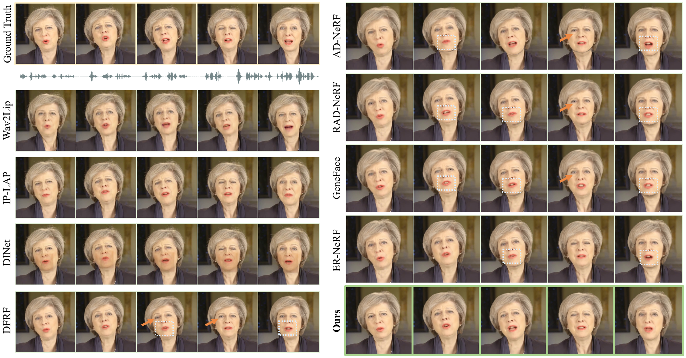

Comparison
Comarison with current SOTA baselines. Zoom in for better visualization.


Radiance fields have demonstrated impressive performance in synthesizing lifelike 3D talking heads. However, due to the difficulty in fitting steep appearance changes, the prevailing paradigm that presents facial motions by directly modifying point appearance may lead to distortions in dynamic regions.
To tackle this challenge, we introduce TalkingGaussian, a deformation-based radiance fields framework for high-fidelity talking head synthesis. Leveraging the point-based Gaussian Splatting, facial motions can be represented in our method by applying smooth and continuous deformations to persistent Gaussian primitives, without requiring to learn the difficult appearance change like previous methods. Due to this simplification, precise facial motions can be synthesized while keeping a highly intact facial feature. Under such a deformation paradigm, we further identify a face-mouth motion inconsistency that would affect the learning of detailed speaking motions. To address this conflict, we decompose the model into two branches separately for the face and inside mouth areas, therefore simplifying the learning tasks to help reconstruct more accurate motion and structure of the mouth region.
Extensive experiments demonstrate that our method renders high-quality lip-synchronized talking head videos, with better facial fidelity and higher efficiency compared with previous methods.Comarison with current SOTA baselines. Zoom in for better visualization.